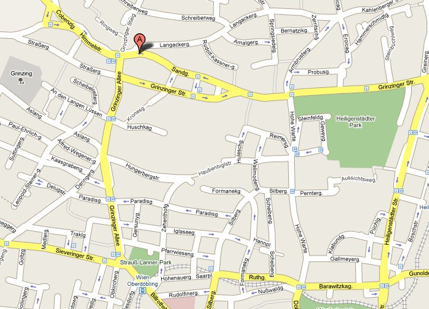

Sandgasse 7–9 · 1190 Wien-Grinzing
Kontakt & Anfahrt
Mitten im historischen Weinort Grinzing, wenige Schritte von der Grinzinger Straße entfernt.
Der Heurige
ALTER BACH-HENGL Heurigenbetriebs GmbHFamilie Franz Hengl
Sandgasse 7–9
1190 Wien-Grinzing, Österreich
Telefon: +43 1 320 24 39
Fax: +43 1 320 55 60
E-Mail: bach-hengl@aon.at
Öffnungszeiten
- Täglich ab 15 Uhr geöffnet
- Ab 18 Uhr Original Wiener Live-Musik
- Weinverkostung, Keller- und Weingartenführung nach Vereinbarung
Zahlung
AMEX, VISA, MASTERCARD, DINERS und JCB.

Anfahrt
So finden Sie zu uns
- Mit öffentlichen Verkehrsmitteln Grinzing ist mit den Wiener Linien gut erreichbar. Vom Ortszentrum Grinzing sind es wenige Gehminuten in die Sandgasse.
- Mit dem Auto Über die Grinzinger Allee bzw. Grinzinger Straße bis zur Abzweigung Sandgasse.
- Mit dem Reisebus Bitte Ankunftszeit vorab bekannt geben, damit wir Tische und Küche vorbereiten können.
- Zu Fuß Ein Rundgang durch den historischen Weinort Grinzing lässt sich gut mit einem Besuch verbinden – auf Wunsch als geführter Spaziergang.
Diese Vorschau bindet bewusst keine externen Kartendienste ein – damit keine Daten ohne Ihr Zutun an Dritte gehen. Der Routen-Link öffnet eine freie Kartenanwendung in einem neuen Fenster.
Bewertungen
Sagen Sie uns, wie es war
Gefallen hat es Ihnen? Dann freuen wir uns über eine Bewertung auf den bekannten Portalen – und noch mehr über Rückmeldungen direkt an uns. Kritik nehmen wir ernst: Schreiben Sie uns an bach-hengl@aon.at.
Newsletter